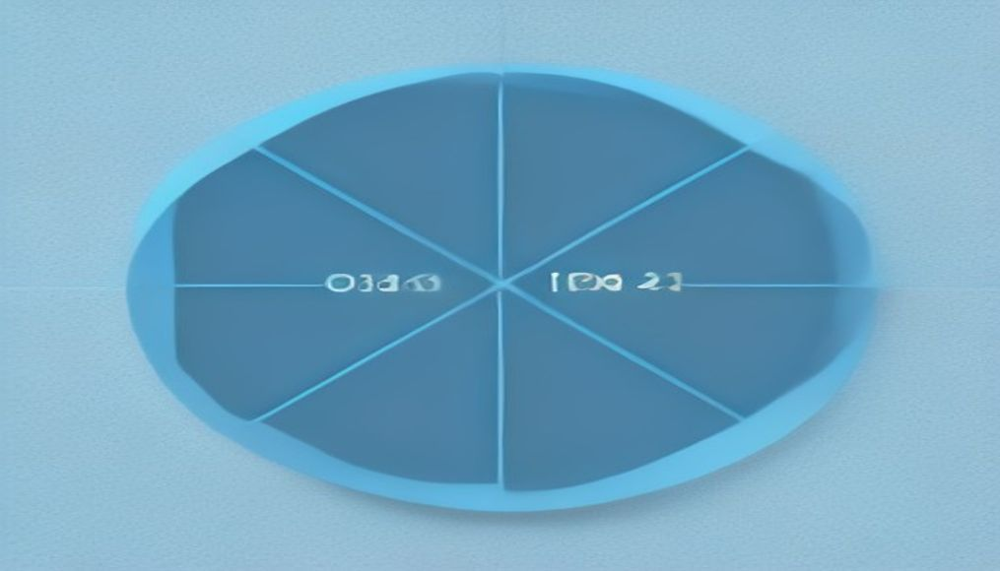
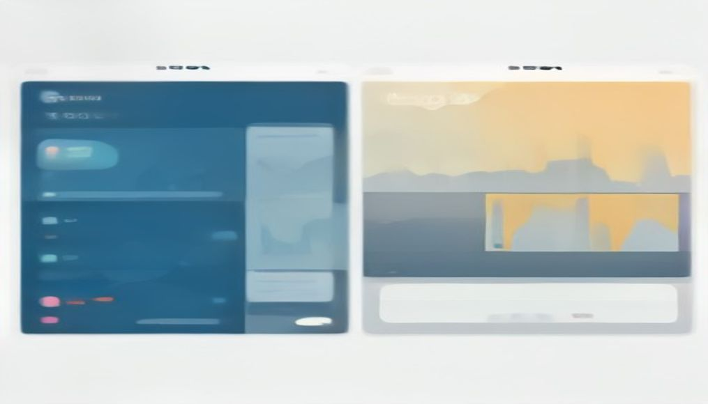
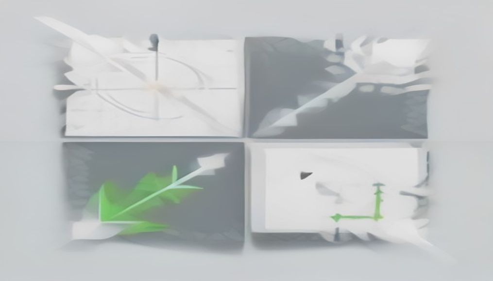
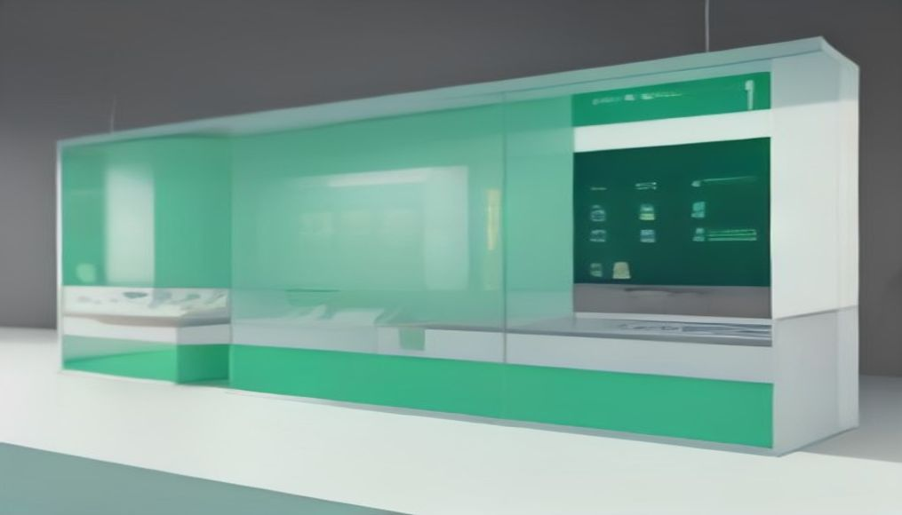
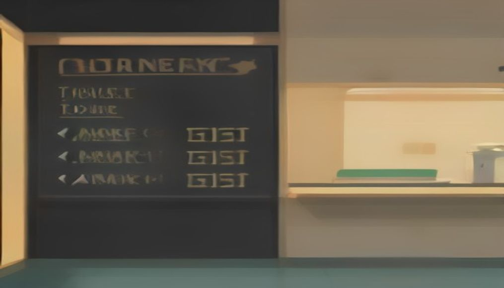
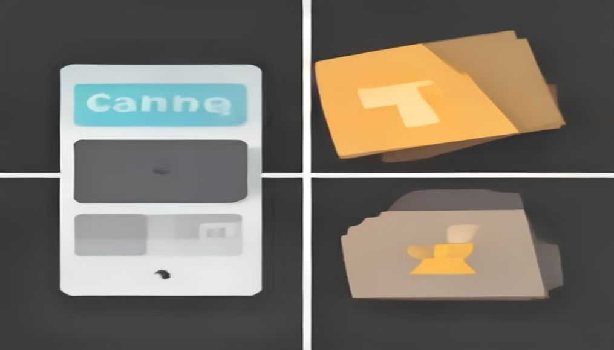
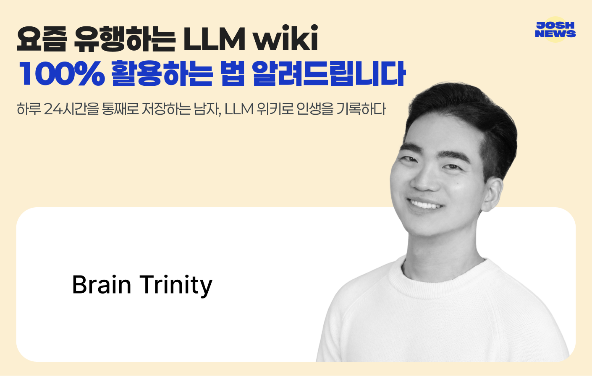
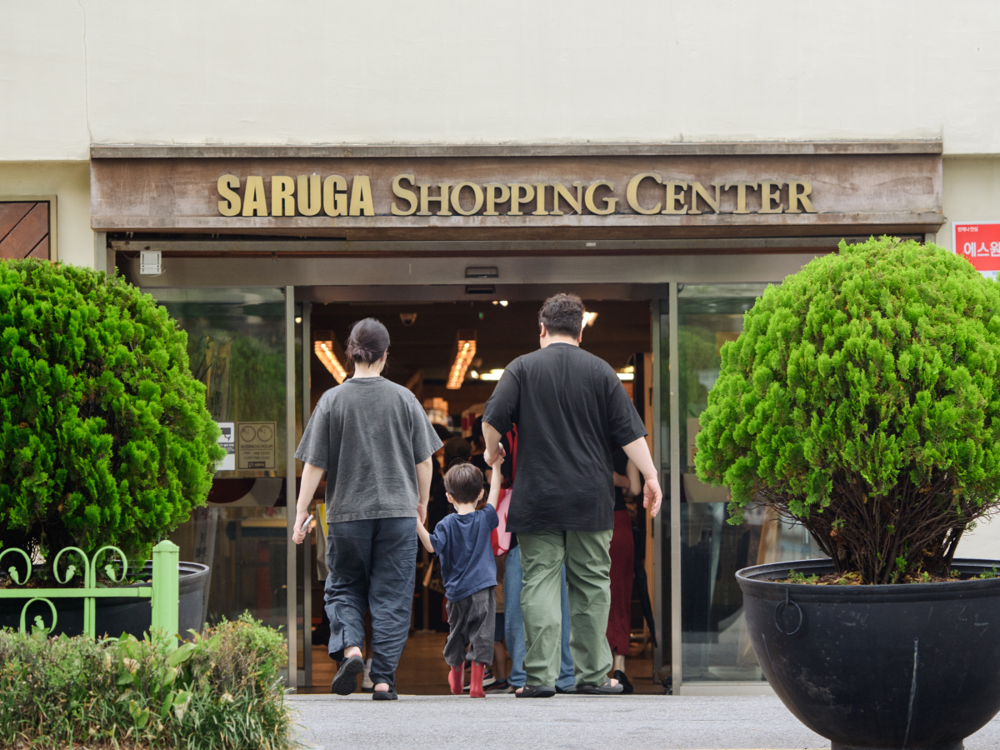

안녕하세요! 금요일 마케팅 소식 전해드립니다 😊 오늘은 롱블랙의 '사러가' 이야기가 인상 깊습니다. 새벽배송이 일상화되고 어디서든 클릭 한 번으로 장을 볼 수 있는 지금, 연희동에서 60년을 버텨온 동네슈퍼의 생존 비결을 들여다보는 아티클인데요. 플랫폼과 물류의 편의가 극대화될수록, 오히려 그 틈을 채우는 것은 '관계'와 '맥락'이라는 점을 다시 확인하게 됩니다. 대형 플랫폼이 따라 하기 어려운 작은 브랜드만의 밀도를 생각해보게 하는 콘텐츠입니다.
마케팅 뉴스에서는 카카오의 에이전틱 AI 전략과 함께, SEO에서 GEO(생성형 엔진 최적화)로 무게중심이 이동하는 흐름이 연이어 다뤄지고 있습니다. IAB가 발표한 'AI 가시성 4P' 프레임워크나 Google AI 모드의 '쿼리 팬아웃' 메커니즘처럼, 브랜드 노출의 규칙이 빠르게 바뀌고 있는 만큼 측정 기준 자체를 점검해볼 타이밍입니다. 버거킹이 손글씨 입간판과 기사식당 감성으로 아침 메뉴 캠페인을 전개해 화제를 모은 사례도 함께 살펴보시길 권합니다. 세련됨보다 날 것의 친근함을 택한 크리에이티브 방향이 시선을 사로잡습니다.
이번 주도 정말 수고 많으셨습니다. 활기차게 금요일 하루 시작하시길 바랍니다! 🙌
카카오가 에이전틱 AI를 핵심 전략으로 선언하며, 카카오톡 대화 맥락에서 음식 주문까지 연결하는 서비스를 예고했다. 정 대표는 이용자 접점과 서비스 생태계에서 앞서 있는 카카오가 에이전틱 AI 구현에 유리한 위치에 있다고 강조했다. 카톡이 단순 메신저를 넘어 구매 실행 채널로 진화할 경우, 브랜드의 카카오 기반 CRM 및 커머스 전략 재설계가 필요해진다.
›
2IAB가 생성형 AI 검색·추천 환경에서 브랜드와 퍼블리셔의 노출을 평가하는 표준 프레임워크 'AI 가시성 4P'를 발표했다. 기존 SEO 중심 측정 방식으로는 AI 오버뷰 등 새로운 노출 환경을 제대로 평가하기 어렵다는 문제의식에서 출발했다. 마케터는 이 프레임워크를 기반으로 AI 검색 내 브랜드 가시성을 정량적으로 관리하는 체계를 갖출 필요가 있다.
›
3생성형 AI가 정보 탐색 창구로 부상하면서 SEO에서 GEO(생성형 엔진 최적화)로 관심이 이동하고 있다. 박정윤 오픈타임 대표는 검색 점유율 70%를 차지하는 네이버 AI 브리핑을 글로벌 AI 엔진 점수와 분리해 측정해야 한다고 주장했다. 국내 마케터는 글로벌 GEO 솔루션의 수치만으로 한국 시장 가시성을 판단하는 오류를 경계해야 한다.
›
4구글의 AI 모드 검색은 사용자 질문을 여러 하위 질문으로 분해해 동시에 검색하고 결과를 조합하는 '쿼리 팬아웃' 메커니즘을 핵심 기술로 채택했다. 이에 따라 단일 키워드 최적화보다 다양한 하위 의도를 커버하는 콘텐츠 설계가 중요해지고 있다. SEO 전략을 AI 검색 환경에 맞게 재편하려는 마케터에게 직접적인 실무 시사점을 제공한다.
›
5고객이 자사몰, 네이버 브랜드스토어, 오프라인 매장을 넘나들며 구매하지만 기업의 고객 데이터는 채널별로 분리돼 있어 전체 구매 여정 파악이 어렵다. AI CRM 솔루션 마켓탭을 운영하는 펄스디는 흩어진 데이터를 하나로 연결해 실제 마케팅 실행까지 이어주는 방식으로 이 문제를 해결하고 있다. 옴니채널 환경에서 CRM 고도화를 추진하는 브랜드에게 데이터 통합이 선결 과제임을 시사한다.
›
6버거킹이 손글씨풍 입간판과 기사식당 소품을 매장에 설치하는 '촌스러운' 비주얼로 아침 식사 메뉴 캠페인을 전개해 SNS에서 화제를 모았다. 패스트푸드답지 않은 낯선 맥락이 오히려 인증 사진과 밈 공유를 유도하는 바이럴 효과를 냈다. 익숙한 브랜드도 의외의 크리에이티브 코드로 소비자 참여를 이끌 수 있다는 점을 보여주는 사례다.
›
7숏폼 영상과 추천 알고리즘 확산으로 개별 게시물 성과 극대화보다 소비자가 반복해서 찾는 콘텐츠 시리즈를 꾸준히 선보이는 전략이 중요해지고 있다. 소셜미디어 분석 기업 몬도 메트릭스 창업자 닉 시세로는 반복적으로 이어지는 콘텐츠가 브랜드와 소비자의 관계를 만든다고 강조했다. 마케터는 콘텐츠 캘린더를 단발성 이슈 대응이 아닌 시리즈 설계 관점으로 전환할 필요가 있다.
›
하루 24시간을 통째로 저장하는 남자, LLM 위키로 인생을 기록하다

시장이나 마트에 가야 할 이유가 점점 사라지는 시대예요. 생수와 휴지는 물론, 스테이크용 소고기나 샤인머스캣까지 문 앞에 놓이니까요. 요즘 같은 무더위엔 다행이라는 생각까지 들죠.그런데 서울의 한 동네 풍경은 다릅니다.
아티클 읽기 →브랜드 진단부터 지금 당장 해야 할 우선순위까지,
30분 무료 상담에서 함께 정리해드려요.
이미 수십 개 브랜드가 상담받았습니다.
내 브랜드처럼, 함께 고민하는 팀원의 마음으로 봅니다.
스타트업 대표·마케팅 담당자를 위한 30분